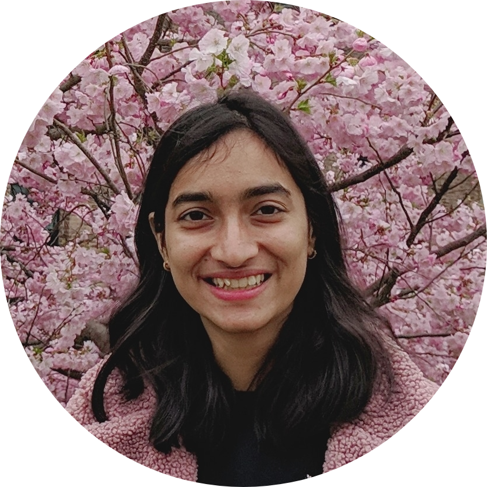

Hi, I'm a second year PhD student at the University of Illinois Urbana-Champaign in Electrical and Computer Engineering. I am a research assistant at Distributed Autonomous Systems Laboratory (DASLAB) working with Prof. Girish Chowdhary.
I am passionate about applying computer vision and multi-agent coordination in agricultural systems. Prior to joining UIUC, I graduated from Cornell University with an MEng degree in Electrical and Computer Engineering in May 2020, where I had the honor of working with Prof. Joseph Skovira and Prof. Hadas Kress-Gazit. I also interned for about a year at Xallent LLC. I am most skilled in ROS, Python, MATLAB and C++.
Alongside my interests in agricultural robotics, some of my other interests and hobbies are cooking, painting, gaming and hiking.